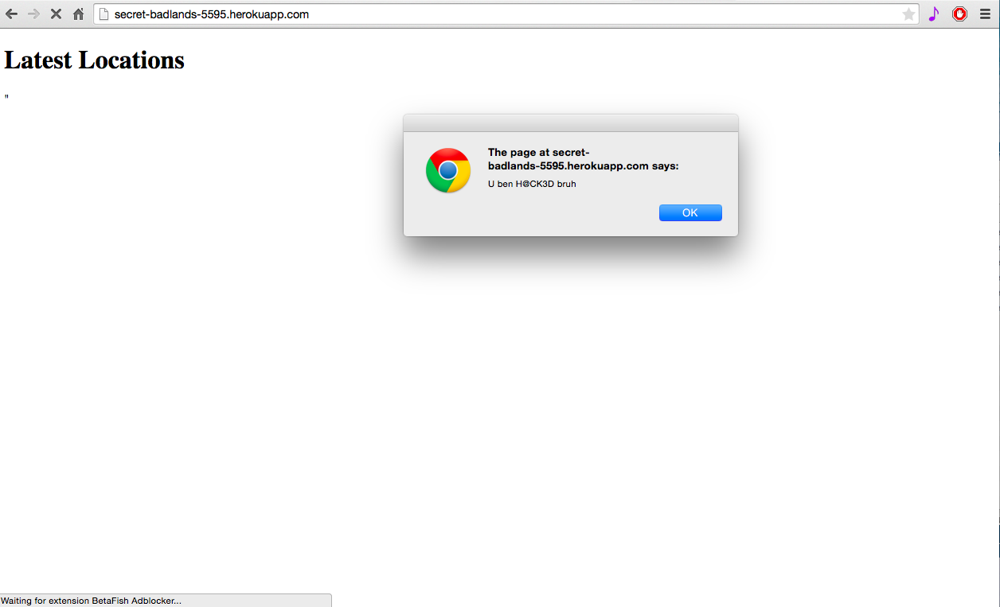
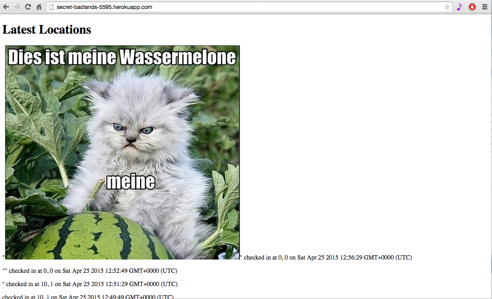
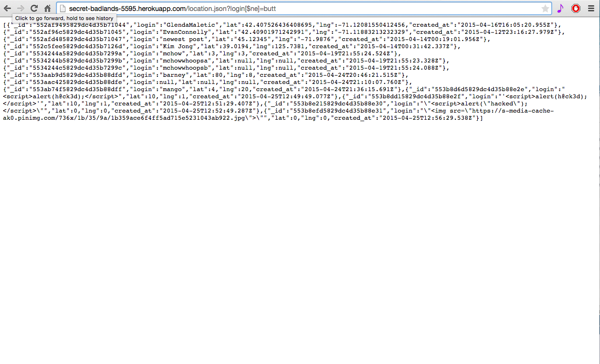
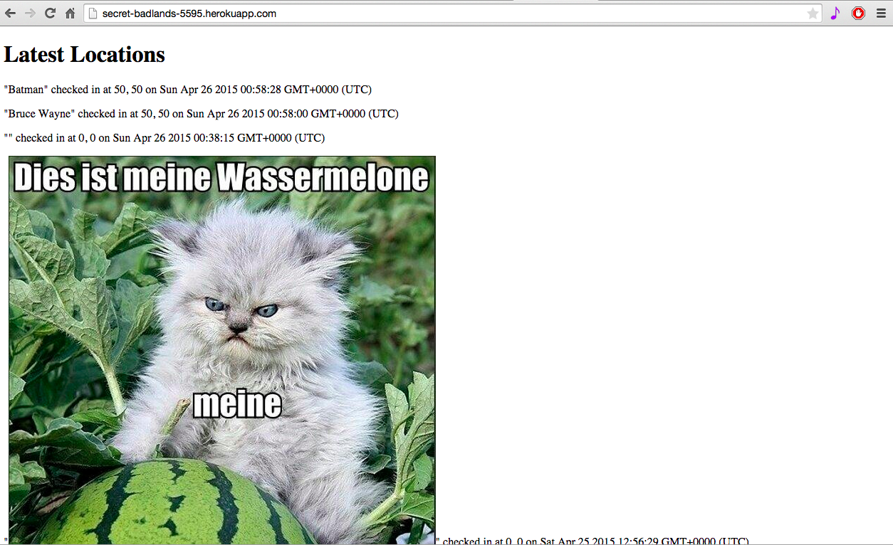

Security Assessment of Dan Callahan's Web Application
by James McDowell 4/24/15
Introduction
This document assesses the security of Dan Callahan’s Maurader’s Map heroku web application at http://secret-badlands-5595.herokuapp.com/. The app stores records of each users login name, location, and check-in time in a MongoDB database. In this report, 3 security vulnerabilities of his application are listed.
Methodology
At first, “black-box testing” was used to primarily assess a few issues, such as cross-site scripting, with cURL.
Next, Dan’s source code was viewed for “white-box testing”, to confirm and identify other suspected security flaws.
Abstract of Findings
The most glaring security issue is the blatant trust of user input. This includes problems that could occur when a user submits possibly malicious content into the input field, or when data from the database is being requested.
Issues Found
- Cross-Site Scripting (XSS)
- Affects post /sendLocation
- Severity: high. Attackers can submit any malicious content they want (e.g. pop-ups, redirects, malicious images, etc.)
- Script can be injected into the input using cURL: curl -d “login=’JAVASCRIPT’&lat=0&lng=0” http://secret-badlands-5595.herokuapp.com/
- html format was also used to inject malicious content: curl -d 'login="SOME IMAGE"&lat=0&lng=0' https://secret-badlands-5595.herokuapp.com/sendLocation
- This issue could be resolved by validating user input. Disallowing html-unsafe characters will sanitize the input for sendLocation.


- Query Injection
- Affects get /location.json
- Severity: high. Attackers can request and illicitly obtain any information they want from the database.
- By accessing http://secret-badlands-5595.herokuapp.com/location.json?login[$ne]=butt, the entirety of the content of the database collection can be viewed.
- This issue can also be resolved by validating user input. We can disallow queries that are not represented as strings in express (e.g. [$ne]=).

- No Data Verification
- Affects post /sendLocation
- Severity: medium. Attackers are able to submit false data to the database, which ultimately corrupts the server’s information. Another vulnerability possibility is database flooding; since there is no data verification, users can run a bash script to flood the database with possibly false user input.
- cURL was used again to submit false user input: curl -d 'login="FALSE INPUT"&lat=WRONG&lng=COORDINATES'
- The following image shows that faulty input is easy to submit, as Batman and Bruce Wayne couldn’t possibly be in the same location.
- This issue could be resolved by validating user input. Multiple records being submitted from the same source should be checked.

Conclusion
The current web application doesn’t hold security as a very high priority. However, the issues of cross-site scripting, query injection, and the lack of data verification can be remedied by validating user input. Disallowing html-unsafe characters and checking records from the same source will help the security for the post /sendLocation portion of the application. Also, disallowing non-string queries in the get /location.json will further benefit the security of the project.